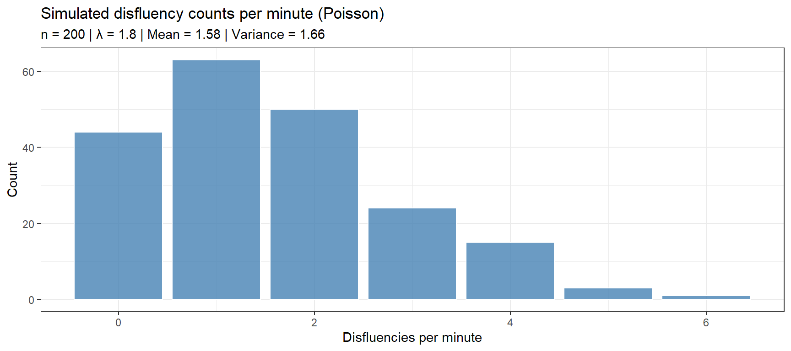
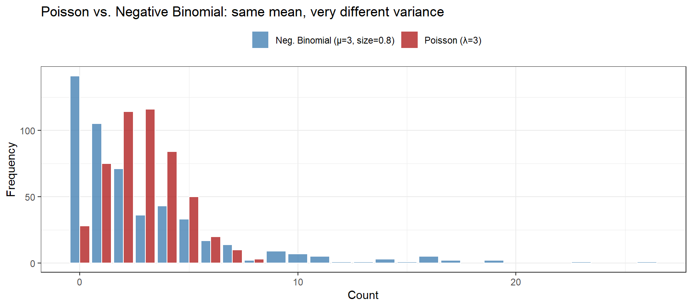
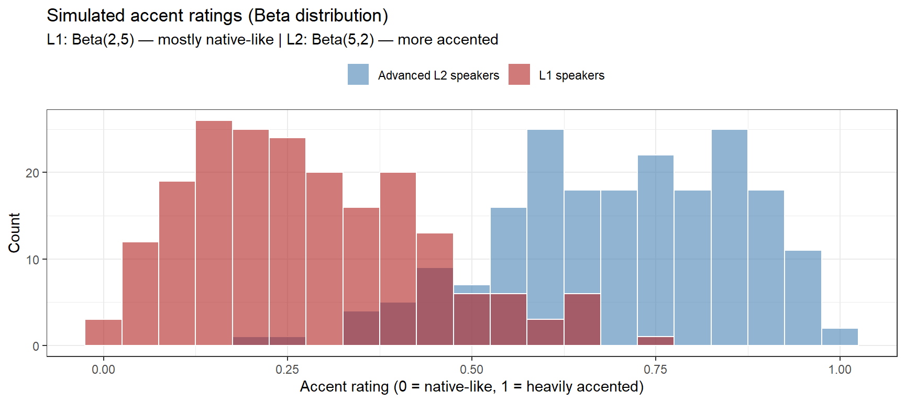
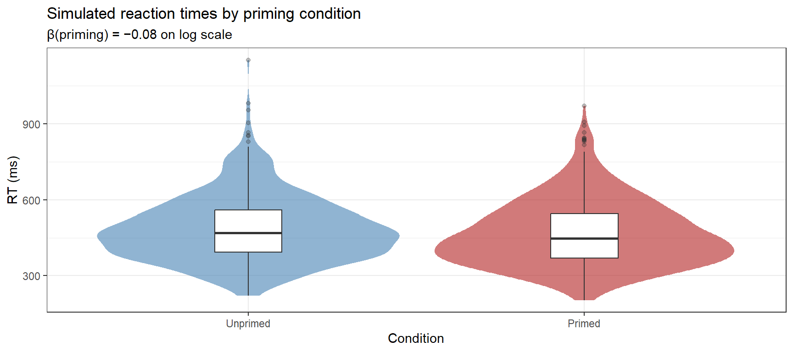
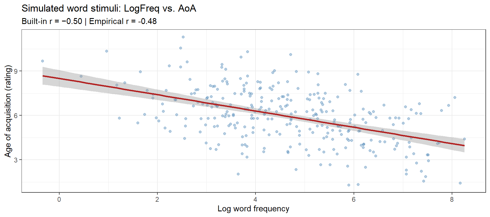
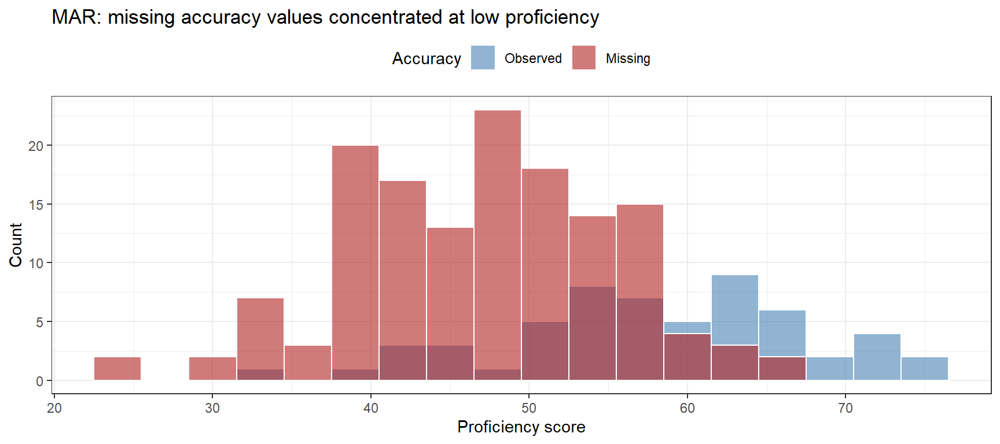
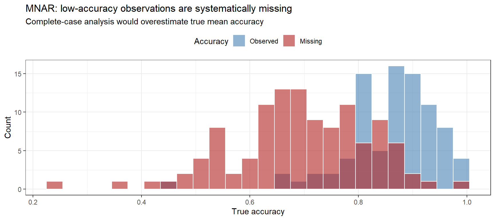
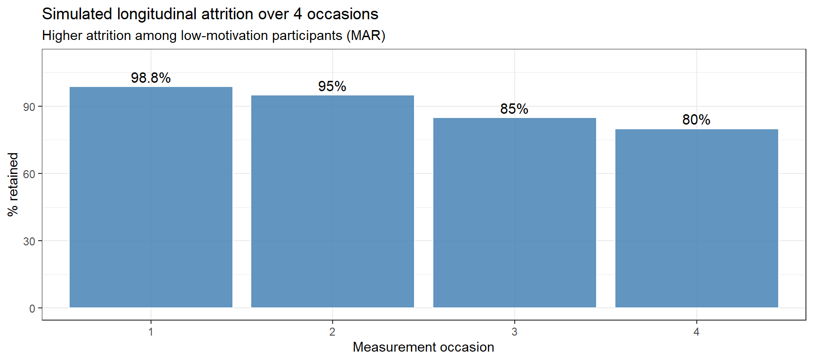
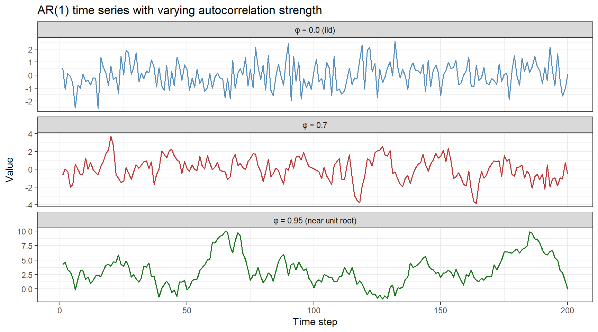
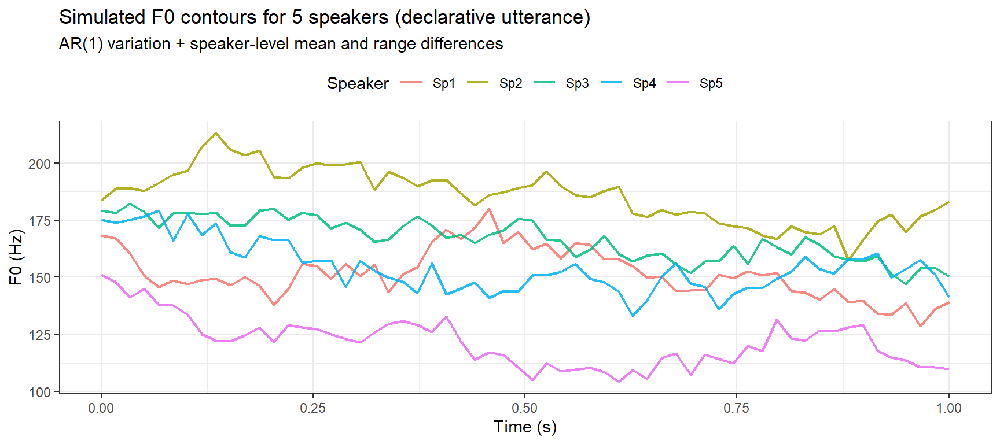

Data simulation is one of the most underused and underappreciated skills in quantitative linguistics. It tends to be introduced only in the context of power analysis — “how many participants do I need?” — but its range of applications is far broader. You simulate data when you want to verify that your statistical model recovers known parameters, when you want to share a reproducible example without distributing confidential data, when you want to test how robust your analysis pipeline is to edge cases before real data arrives, or when you want to teach a concept using a dataset whose properties you control completely.
This tutorial covers simulation from first principles: how R generates pseudo-random numbers, how to sample from the distributions that matter most in linguistics, how to assemble those draws into realistic datasets, and how to build the more advanced simulation workflows — correlated predictors, sociolinguistic variation, missing data, longitudinal trajectories, synthetic text, and power analysis — that will serve you across a wide range of research scenarios.
Prerequisite Tutorials
Before working through this tutorial, you should be familiar with the content of the following:
Basic Inferential Statistics — null hypothesis testing, p-values, effect sizes (recommended for the power analysis section)
Mixed-Effects Models — random intercepts and slopes (required for the power analysis section)
Learning Objectives
By the end of this tutorial you will be able to:
Explain why data simulation is a core research skill, not just a workaround for missing data
Use set.seed() correctly to make simulations reproducible
Simulate data from the most common statistical distributions used in linguistics (normal, binomial, Poisson, uniform, negative binomial, Beta, Gamma)
Build realistic simulated datasets for corpus studies, psycholinguistic experiments, and Likert-scale surveys
Simulate multivariate data with correlated predictors using the multivariate normal distribution
Simulate sociolinguistic variation using variable rule (Varbrul) style models
Simulate missing data and attrition patterns (MCAR, MAR, MNAR)
Simulate time-series and longitudinal data with autocorrelation and growth curve components
Generate synthetic textual data using template construction and bigram language models
Conduct a simulation-based power analysis to determine required sample size for a mixed-effects model
Citation
Martin Schweinberger. 2026. Simulating Data with R. The Language Technology and Data Analysis Laboratory (LADAL), The University of Queensland, Australia. url: https://ladal.edu.au/tutorials/data_simulation/data_simulation.html (Version 3.1.1), doi: 10.5281/zenodo.19332961.
Loading Data Instead of Simulating?
If you have real data and want to learn how to import it into R, see the companion tutorial: Loading and Saving Data in R.
Setup
Installing Packages
Code
# Run once — comment out after installationinstall.packages("dplyr") # data manipulationinstall.packages("tidyr") # data reshapinginstall.packages("stringr") # string manipulationinstall.packages("purrr") # functional programming (map/walk)install.packages("ggplot2") # visualisationinstall.packages("MASS") # multivariate normal (mvrnorm)install.packages("lme4") # mixed-effects models (for power analysis)install.packages("broom.mixed") # tidy mixed-effects model outputinstall.packages("faux") # correlated data simulationinstall.packages("truncnorm") # truncated normal distribution
What you will learn: The six main use cases for data simulation in linguistic research, and why simulation belongs in every researcher’s methodological toolkit
Data simulation is not just a workaround for when you lack real data. It is a core methodological tool with at least six distinct applications:
1. Verifying your model recovers known parameters. If you simulate data with a known effect of size β = −0.08 and then fit a mixed-effects model, you should recover approximately −0.08. If your model returns something very different, the problem is with your model specification, not your data. This parameter recovery check is one of the most powerful debugging tools available.
2. Sharing reproducible examples. You can provide a self-contained, runnable script that demonstrates your analysis pipeline without distributing confidential participant data or proprietary corpus content. Every reader can run your exact analysis on your exact (simulated) data.
3. Teaching statistical concepts. Simulation gives you complete control over the data-generating process. You can show students exactly what happens when an assumption is violated, when sample size is too small, or when a confound is present — without needing to find a real dataset that happens to illustrate the point.
4. Power analysis. By simulating many datasets under a hypothesised effect size and measuring how often your model detects the effect, you can estimate the sample size needed to achieve a desired power level. This is especially valuable for complex models (mixed-effects, SEM) where analytical power formulae do not exist.
5. Stress-testing pipelines. Before your real data arrives, you can check whether your analysis code handles edge cases: completely missing conditions, zero-variance predictors, extreme outliers, unbalanced designs, or floor/ceiling effects. Better to discover these problems in simulation than in your final dataset.
6. Bayesian prior predictive checks. In Bayesian analysis, you simulate data from your prior distributions before seeing any data, to check whether your priors are sensible — do the prior-predicted datasets look anything like plausible real data?
Reproducibility and set.seed()
Section Overview
What you will learn: What pseudo-random number generation is; how set.seed() makes simulations exactly reproducible; and the rules for using seeds responsibly in research
R’s random number generation is pseudo-random: starting from a fixed seed value, the same sequence of “random” numbers is generated every time. The seed initialises a deterministic algorithm (by default the Mersenne Twister) that produces a sequence indistinguishable from true randomness for practical purposes, but that is perfectly reproducible when you know the starting point.
Code
# Without a seed: different results every timesample(1:100, 5)
[1] 83 91 62 87 25
Code
sample(1:100, 5)
[1] 43 29 3 50 24
Code
# With a seed: identical results every timeset.seed(2026)sample(1:100, 5)
[1] 93 97 38 45 91
Code
set.seed(2026) # reset to the same seedsample(1:100, 5) # same result as above
[1] 93 97 38 45 91
Rules for set.seed() in Research
Always set a seed at the start of any script that uses random number generation.
Set the seed once, at the top of the script — not before every individual random call (which hides stochasticity and can produce artificially good results).
Document the seed in your methods section so others can reproduce your exact simulation.
Test with multiple seeds to confirm your findings are not artefacts of one particular seed value.
Use a memorable but arbitrary seed — the year of the study, a postal code, or a fixed arbitrary number. Never choose the seed after seeing which value gives you “nice” results — that is a form of researcher degrees of freedom.
Code
# Recommended practice: one seed at the top of the scriptset.seed(2026)# From this point on, all random calls are reproduciblex <-rnorm(100)y <-sample(letters, 10)z <-rbinom(50, size =1, prob =0.3)head(x, 5); y; head(z, 5)
[1] 0.52059 -1.07969 0.13924 -0.08475 -0.66664
[1] "x" "c" "k" "v" "p" "f" "u" "a" "d" "m"
[1] 1 0 0 0 0
Simulating from Statistical Distributions
Section Overview
What you will learn: R’s distribution function naming convention; how to simulate from the normal, binomial, Poisson, uniform, negative binomial, Beta, and Gamma distributions; and which distribution is appropriate for which type of linguistic data
R provides a consistent family of functions for every major distribution. The naming convention uses a prefix (r, d, p, q) followed by the distribution name:
R distribution function naming convention
Prefix
Function
Example
r
Random samples
rnorm(n, mean, sd)
d
Density (PDF/PMF)
dnorm(x, mean, sd)
p
Cumulative probability (CDF)
pnorm(q, mean, sd)
q
Quantile (inverse CDF)
qnorm(p, mean, sd)
The following table summarises which distributions are most useful for linguistic data:
Distribution guide for linguistic data simulation
Distribution
R function
Typical linguistic use
Normal
rnorm()
Pitch, formants, log-transformed RT, log word frequency
The normal (Gaussian) distribution is appropriate for continuous variables that are symmetric around a mean. In linguistics, most continuous variables (pitch in Hz, formant values, word length) are approximately normal or can be normalised by log-transformation.
Code
set.seed(2026)# Simulate log-transformed reaction times# Mean ~6.4 ≈ exp(6.4) ≈ 600 ms; SD = 0.3 on the log scalelog_rt <-rnorm(n =500, mean =6.4, sd =0.3)rt_ms <-exp(log_rt) # back-transform to millisecondsdata.frame(log_rt = log_rt, rt_ms = rt_ms) |>ggplot(aes(x = rt_ms)) +geom_histogram(aes(y =after_stat(density)),bins =30, fill ="steelblue", color ="white", alpha =0.8) +geom_density(color ="firebrick", linewidth =1) +theme_bw() +labs(title ="Simulated reaction times (log-normal distribution)",subtitle ="n = 500 | Mean ≈ 600 ms",x ="Reaction time (ms)", y ="Density")
Code
cat(sprintf("Mean RT: %.1f ms | SD: %.1f ms | Range: %.0f–%.0f ms\n",mean(rt_ms), sd(rt_ms), min(rt_ms), max(rt_ms)))
Mean RT: 637.9 ms | SD: 198.2 ms | Range: 280–1545 ms
Binomial Distribution
The binomial distribution models binary outcomes (correct/incorrect, present/absent, target form/alternative). rbinom(n, size, prob) draws n samples from a Binomial(size, prob) distribution.
Code
set.seed(2026)# Simulate accuracy in a lexical decision task# 100 participants, 80 trials each, average accuracy 85%n_participants <-100n_trials <-80accuracy_prob <-0.85n_correct <-rbinom(n = n_participants, size = n_trials, prob = accuracy_prob)accuracy <- n_correct / n_trialsdata.frame(accuracy = accuracy) |>ggplot(aes(x = accuracy)) +geom_histogram(binwidth =0.02, fill ="steelblue", color ="white", alpha =0.8) +geom_vline(xintercept =mean(accuracy), color ="firebrick",linetype ="dashed", linewidth =1) +theme_bw() +labs(title ="Simulated accuracy in a lexical decision task",subtitle =sprintf("n = %d | %d trials | P(correct) = %.2f | Mean = %.3f", n_participants, n_trials, accuracy_prob, mean(accuracy)),x ="Accuracy", y ="Count")
Poisson Distribution
The Poisson distribution models event counts when events occur independently at a constant average rate λ. In linguistics: number of errors per utterance, disfluencies per minute, or occurrences of a word per short document. A key property is that the mean equals the variance — if your data has variance much larger than the mean (overdispersion), use the negative binomial instead.
Code
set.seed(2026)# Simulate disfluency counts per minute for 200 speakerscorrections <-rpois(n =200, lambda =1.8)data.frame(corrections = corrections) |>ggplot(aes(x = corrections)) +geom_bar(fill ="steelblue", color ="white", alpha =0.8) +theme_bw() +labs(title ="Simulated disfluency counts per minute (Poisson)",subtitle =sprintf("n = 200 | λ = 1.8 | Mean = %.2f | Variance = %.2f",mean(corrections), var(corrections)),x ="Disfluencies per minute", y ="Count")

Negative Binomial Distribution
The negative binomial extends Poisson to handle overdispersion — variance exceeding the mean — which is the norm for linguistic count data (word frequencies, collocation counts, error counts across diverse speakers).
Code
set.seed(2026)# Compare Poisson vs. Negative Binomial: same mean, different variancepois_counts <-rpois(n =500, lambda =3.0)nb_counts <-rnbinom(n =500, mu =3.0, size =0.8) # size controls overdispersioncat(sprintf("Poisson: Mean = %.2f | Variance = %.2f\n",mean(pois_counts), var(pois_counts)))
Poisson: Mean = 2.90 | Variance = 2.73
Code
cat(sprintf("Neg. Binom: Mean = %.2f | Variance = %.2f\n",mean(nb_counts), var(nb_counts)))
Neg. Binom: Mean = 2.79 | Variance = 13.41
Code
data.frame(count =c(pois_counts, nb_counts),dist =rep(c("Poisson (λ=3)", "Neg. Binomial (μ=3, size=0.8)"), each =500)) |>ggplot(aes(x = count, fill = dist)) +geom_bar(position ="dodge", alpha =0.8, color ="white") +scale_fill_manual(values =c("steelblue", "firebrick")) +theme_bw() +theme(legend.position ="top") +labs(title ="Poisson vs. Negative Binomial: same mean, very different variance",x ="Count", y ="Frequency", fill ="")

Uniform Distribution
The uniform distribution generates values equally likely across an interval. Useful for participant ages, random stimulus onset times, or positions in a text.
Code
set.seed(2026)# Participant ages: continuous uniform then roundedages <-round(runif(n =200, min =18, max =65))cat(sprintf("Ages — Range: %d–%d | Mean: %.1f\n",min(ages), max(ages), mean(ages)))
The Beta distribution models proportions bounded strictly between 0 and 1. It is ideal for accent rating scales (after rescaling to (0,1)), similarity judgements, or any response that is inherently proportional.
Code
set.seed(2026)# Simulate accent ratings (0 = native-like, 1 = heavily accented)# Beta(2, 5): right-skewed, most ratings near the native-like end# Beta(5, 2): left-skewed, most ratings toward heavily-accented end# Beta(2, 2): symmetric, centred at 0.5ratings_native <-rbeta(200, shape1 =2, shape2 =5)ratings_l2 <-rbeta(200, shape1 =5, shape2 =2)data.frame(rating =c(ratings_native, ratings_l2),group =rep(c("L1 speakers", "Advanced L2 speakers"), each =200)) |>ggplot(aes(x = rating, fill = group)) +geom_histogram(binwidth =0.05, position ="identity", alpha =0.6, color ="white") +scale_fill_manual(values =c("steelblue", "firebrick")) +theme_bw() +theme(legend.position ="top") +labs(title ="Simulated accent ratings (Beta distribution)",subtitle ="L1: Beta(2,5) — mostly native-like | L2: Beta(5,2) — more accented",x ="Accent rating (0 = native-like, 1 = heavily accented)", y ="Count",fill ="")

Gamma Distribution
The Gamma distribution models positive, right-skewed continuous variables — particularly durations. In linguistics: vowel duration, inter-pausal interval length, or fixation durations in eye-tracking.
A researcher simulates 500 reaction times with rnorm(500, mean = 600, sd = 80). Her supervisor asks whether this is appropriate. What is the main problem?
rnorm() cannot simulate reaction times — use rpois() instead
Reaction times are always positive and approximately log-normally distributed; the normal distribution allows negative values and is symmetric, which is unrealistic. Simulate on the log scale: exp(rnorm(500, mean = log(600), sd = 0.15))
500 observations is too small for any simulation
Reaction times are normally distributed in large samples by the Central Limit Theorem, so this is fine
Answer
b) Reaction times are bounded at zero and right-skewed. The normal distribution with mean 600 and SD 80 produces some negative values and is symmetric — neither property matches real RT data. The standard approach is to simulate on the log scale and back-transform: rt <- exp(rnorm(n, mean = log(600), sd = 0.15)). Option (d) confuses the CLT (which applies to sample means) with the distribution of individual observations.
Simulating Realistic Linguistic Datasets
Section Overview
What you will learn: How to assemble individual random draws into complete, realistic datasets for three common linguistic research designs: corpus frequency analysis, psycholinguistic experiments, and Likert-scale surveys
Simulating a Corpus Frequency Dataset
Corpus frequency data follow a Zipfian distribution: a small number of word types are very frequent and the vast majority are extremely rare. The frequency of the word at rank r is proportional to 1/r^α, where α ≈ 1.0 for English.
Code
set.seed(2026)n_types <-500alpha <-1.0ranks <-1:n_typesfreq_probs <- (1/ ranks^alpha) /sum(1/ ranks^alpha)n_tokens <-50000word_freqs <-round(freq_probs * n_tokens)word_freqs[word_freqs ==0] <-1corpus_freq_df <-data.frame(rank = ranks,word =paste0("word_", stringr::str_pad(ranks, 3, pad ="0")),freq = word_freqs,log_rank =log(ranks),log_freq =log(word_freqs))ggplot(corpus_freq_df, aes(x = log_rank, y = log_freq)) +geom_point(alpha =0.3, size =1, color ="steelblue") +geom_smooth(method ="lm", se =FALSE, color ="firebrick", linewidth =1) +theme_bw() +labs(title ="Zipf plot: simulated corpus word frequencies",subtitle =sprintf("Vocabulary: %d types | Corpus: %d tokens | α = %.1f", n_types, sum(word_freqs), alpha),x ="log(rank)", y ="log(frequency)")
A realistic psycholinguistic dataset requires multiple participants (a random effect), multiple items (another random effect), fixed effects of experimental conditions, and residual noise. Here we simulate a priming experiment with two conditions (Primed vs. Unprimed) and a continuous word frequency covariate.
ggplot(sim_exp, aes(x = Condition, y = RT, fill = Condition)) +geom_violin(alpha =0.6, color =NA) +geom_boxplot(width =0.2, fill ="white", outlier.alpha =0.3) +scale_fill_manual(values =c("steelblue", "firebrick")) +theme_bw() +theme(legend.position ="none") +labs(title ="Simulated reaction times by priming condition",subtitle ="β(priming) = −0.08 on log scale",x ="Condition", y ="RT (ms)")

Simulating a Survey Dataset
Attitude surveys generate Likert-scale data. Here we simulate a five-item language attitude survey with two groups (L1 English vs. L1 Other):
Code
set.seed(2026)n_respondents <-120n_l1_english <-60item_means_eng <-c(4.1, 3.8, 4.3, 3.5, 4.0)item_means_other <-c(3.2, 3.0, 3.5, 2.8, 3.1)item_sd <-0.8# Generate continuous underlying score; round and clip to [1,5]sim_likert <-function(n, means, sd) { purrr::map_dfc(means, function(m) { raw <-rnorm(n, mean = m, sd = sd)pmin(pmax(round(raw), 1), 5) }) |> purrr::set_names(paste0("Item", seq_along(means)))}survey_df <- dplyr::bind_rows(sim_likert(n_l1_english, item_means_eng, item_sd),sim_likert(n_respondents - n_l1_english, item_means_other, item_sd)) |> dplyr::mutate(Respondent =paste0("R", stringr::str_pad(1:n_respondents, 3, pad ="0")),Group =c(rep("L1 English", n_l1_english),rep("L1 Other", n_respondents - n_l1_english)),Total =rowSums(dplyr::across(dplyr::starts_with("Item"))) )ggplot(survey_df, aes(x = Total, fill = Group)) +geom_histogram(binwidth =1, position ="dodge", color ="white", alpha =0.8) +scale_fill_manual(values =c("steelblue", "firebrick")) +theme_bw() +theme(legend.position ="top") +labs(title ="Simulated language attitude survey: total scores by group",x ="Total score (5–25)", y ="Count", fill ="")
Simulating Multivariate and Correlated Data
Section Overview
What you will learn: Why correlated predictors matter; how to simulate multivariate normal data with a specified covariance structure using MASS::mvrnorm(); how to verify the correlation structure of your simulated data; and how to incorporate correlated predictors into a realistic regression dataset
Why Correlation Among Predictors Matters
In real linguistic datasets, predictors are almost never independent. Word frequency and word length are negatively correlated. Proficiency and years of study are positively correlated. Age of acquisition and imageability covary with frequency. If you simulate predictors independently and then fit a model, you may obtain spuriously low standard errors and inflated confidence in your results. Realistic simulation requires building in the correlations that exist in your target population.
The multivariate normal distribution is the standard tool for generating a set of continuous variables with a specified mean vector and covariance (or correlation) matrix.
Specifying a Correlation Matrix
Code
set.seed(2026)# Suppose we have three word-level predictors:# LogFreq = log word frequency (from corpus)# LogLength = log word length (in characters)# AoA = age of acquisition rating## Realistic correlations:# LogFreq ↔ LogLength: r = -0.35 (frequent words tend to be shorter)# LogFreq ↔ AoA: r = -0.50 (frequent words acquired earlier)# LogLength↔ AoA: r = 0.30 (longer words tend to be acquired later)# Build the correlation matrixcor_mat <-matrix(c(1.00, -0.35, -0.50,-0.35, 1.00, 0.30,-0.50, 0.30, 1.00 ),nrow =3, ncol =3,dimnames =list(c("LogFreq", "LogLength", "AoA"),c("LogFreq", "LogLength", "AoA") ))# Convert correlation matrix to covariance matrix# by scaling with desired standard deviationssds <-c(1.5, 0.4, 2.0) # SD of each predictorcov_mat <-diag(sds) %*% cor_mat %*%diag(sds)cat("Covariance matrix:\n")
# Scatter plot: LogFreq vs. AoA (should show r ≈ −0.50)ggplot(word_predictors, aes(x = LogFreq, y = AoA)) +geom_point(alpha =0.4, color ="steelblue", size =1.5) +geom_smooth(method ="lm", color ="firebrick", se =TRUE) +theme_bw() +labs(title ="Simulated word stimuli: LogFreq vs. AoA",subtitle =sprintf("Built-in r = −0.50 | Empirical r = %.2f",cor(word_predictors$LogFreq, word_predictors$AoA)),x ="Log word frequency", y ="Age of acquisition (rating)")

Building a Full Dataset with Correlated Predictors
Code
set.seed(2026)# True regression coefficients for a naming latency study (log-RT)intercept <-6.50b_logfreq <--0.06# higher freq → fasterb_loglength <-0.12# longer words → slowerb_aoa <-0.04# later-acquired → slowersigma_residual <-0.18naming_dat <- word_predictors |> dplyr::mutate(word_id =paste0("W", stringr::str_pad(1:n_words, 3, pad ="0")),LogRT = intercept + b_logfreq * LogFreq + b_loglength * LogLength + b_aoa * AoA +rnorm(n_words, 0, sigma_residual),RT =exp(LogRT) )# Fit the model — should recover the true coefficientsm_naming <-lm(LogRT ~ LogFreq + LogLength + AoA, data = naming_dat)round(coef(m_naming), 4)
For factorial designs with within- and between-subject factors and correlated random effects, the faux package provides a high-level interface that is often easier than specifying covariance matrices manually:
You want to simulate two word-level predictors — log frequency and log length — with a correlation of −0.35. You specify the following covariance matrix: Sigma = matrix(c(1, -0.35, -0.35, 1), 2, 2). Is this correct?
Yes — a correlation matrix is a covariance matrix when all variables have unit variance
No — you must first convert to a covariance matrix by multiplying by the variable SDs
No — correlation matrices cannot be used in mvrnorm()
Yes, but only if both variables have the same mean
Answer
a) Yes — a correlation matrix is a covariance matrix when all variables have unit variance.
When all standard deviations are 1, the covariance matrix equals the correlation matrix. If your variables have different SDs, you need to scale the off-diagonals: Sigma = diag(sds) %*% cor_mat %*% diag(sds). Option (b) describes what you must do when SDs differ from 1; it is incorrect when SDs are 1. Option (c) is wrong — mvrnorm() accepts any valid positive-definite matrix as Sigma.
Simulating Sociolinguistic Variation
Section Overview
What you will learn: What variable rule (Varbrul) modelling is; how to simulate sociolinguistic variation datasets with factor groups controlling variant choice probabilities; how to incorporate both social (speaker-level) and linguistic (token-level) constraints; and how to verify that the simulated data shows the expected patterns
Variable Rules and Varbrul Logic
Sociolinguistic variation research models the probability of a speaker selecting one linguistic variant over another (e.g. going vs. goin’, t-deletion vs. retention, copula deletion vs. retention in AAVE). The classic Varbrul framework (Cedergren and Sankoff 1974; Sankoff and Labov 1979) models variant probability as a function of:
Social factor groups: speaker sex, age, social class, ethnicity
Linguistic factor groups: phonological environment, grammatical category, preceding segment, following segment
In modern practice, the equivalent is a mixed-effects logistic regression, where each factor group is a fixed effect and each speaker is a random effect. Simulating such data requires:
Defining a base probability (input probability) for the variant
Specifying factor weights that raise or lower this probability for different factor levels
Sampling speakers with social characteristics from the target population
Sampling tokens per speaker with the appropriate conditional probability
Simulating a (t,d)-Deletion Dataset
(t,d)-deletion is the variable absence of final /t/ or /d/ in consonant clusters (e.g. past → pas’, wind → win’). Deletion is favoured by:
Following segment: preceding a consonant (vs. a vowel)
Grammatical status: monomorphemic words (vs. past tense)
Social factors: working class (vs. middle class), less formal style
# A tibble: 4 × 4
class style deletion_rate n
<chr> <chr> <dbl> <int>
1 MC Formal 0.633 180
2 MC Informal 0.632 690
3 WC Formal 0.745 420
4 WC Informal 0.778 510
Code
# Visualise deletion rate by class and following segmenttoken_df |> dplyr::group_by(class, following_segment) |> dplyr::summarise(deletion_rate =mean(deleted), .groups ="drop") |>ggplot(aes(x = following_segment, y = deletion_rate, fill = class)) +geom_col(position ="dodge", alpha =0.85, color ="white") +scale_fill_manual(values =c("steelblue", "firebrick"),labels =c("Middle class", "Working class")) +scale_y_continuous(labels = scales::percent_format()) +theme_bw() +theme(legend.position ="top") +labs(title ="Simulated (t,d)-deletion rates by social class and following segment",subtitle ="Working class and pre-consonant environments favour deletion",x ="Following segment", y ="Deletion rate (%)", fill ="Social class")
Code
# Fit a mixed-effects logistic regression to recover the built-in coefficientsm_td <- lme4::glmer( deleted ~ class + style + sex + following_segment + morpheme_type + (1| speaker_id),data = token_df,family =binomial(link ="logit"))# Compare true vs. recovered fixed effectstrue_coefs <-c("(Intercept)"=-0.5, classWC =0.6, styleInformal =0.4,sexM =0.3, following_segmentC =0.8, morpheme_typemono =0.5)round(data.frame(True = true_coefs,Recovered =fixef(m_td)[names(true_coefs)]), 3)
True Recovered
(Intercept) -0.5 0.887
classWC 0.6 0.712
styleInformal 0.4 0.158
sexM 0.3 0.288
following_segmentC 0.8 NA
morpheme_typemono 0.5 NA
Extending to Multi-Variant Variables
When there are more than two variants (e.g. three realisations of (ING): full -ing, reduced -in’, or syllabic nasal), use a multinomial logistic model. The simulation approach is the same: compute a log-odds for each category, apply softmax to obtain probabilities, then use sample() or rmultinom():
Code
set.seed(2026)# Three variants: "ing" / "in" / "n" (syllabic nasal)# Base log-odds relative to "ing" (reference)b_in_intercept <--0.3# log-odds of "in" vs "ing" at baselineb_n_intercept <--2.0# log-odds of "n" vs "ing" at baseline (rare)# Effect of informal style on each non-reference categoryb_in_informal <-0.8b_n_informal <-0.5n_obs <-400style_v <-sample(c("Informal", "Formal"), n_obs, replace =TRUE)# Compute multinomial probabilities via softmaxlogit_in <- b_in_intercept + b_in_informal * (style_v =="Informal")logit_n <- b_n_intercept + b_n_informal * (style_v =="Informal")logit_ing <-rep(0, n_obs) # reference categorydenom <-exp(logit_ing) +exp(logit_in) +exp(logit_n)p_ing <-exp(logit_ing) / denomp_in <-exp(logit_in) / denomp_n <-exp(logit_n) / denom# Sample variant for each tokenvariants <- purrr::map_chr(1:n_obs, function(i) {sample(c("ing", "in", "n"), 1, prob =c(p_ing[i], p_in[i], p_n[i]))})# Proportions by styletable(style_v, variants) |>prop.table(margin =1) |>round(3)
variants
style_v in ing n
Formal 0.380 0.567 0.053
Informal 0.573 0.359 0.068
✎ Check Your Understanding — Question 3
In a Varbrul-style simulation, you set a factor weight of +0.8 on the log-odds scale for the “following consonant” environment. A colleague says this means deletion is 80% more likely in that environment. Are they correct?
Yes — a log-odds increase of 0.8 corresponds to an 80% increase in probability
No — a log-odds increase of 0.8 corresponds to an odds ratio of exp(0.8) ≈ 2.23, meaning the odds of deletion are approximately 2.23× higher (not the probability)
No — a log-odds increase of 0.8 means deletion is 8% more likely
Yes — on the log-odds scale, coefficients map directly to percentage changes
Answer
b) On the logistic scale, coefficients are log-odds ratios. An increase of 0.8 means the odds of deletion are multiplied by exp(0.8) ≈ 2.23. The actual change in probability depends on the baseline probability: if deletion is 40% likely at baseline, the odds are 0.40/0.60 ≈ 0.67; after multiplying by 2.23, the odds become ~1.48, corresponding to a probability of 1.48/(1+1.48) ≈ 60%. The probability increase is ~20 percentage points, not 80% or 8%.
Simulating Missing Data and Attrition
Section Overview
What you will learn: The three mechanisms of missingness (MCAR, MAR, MNAR); how to introduce each type of missing data into a simulated dataset; and how to verify that your chosen missingness mechanism produces the expected patterns
Why Missingness Matters
Missing data is ubiquitous in linguistic research: participants drop out of longitudinal studies, items are not answered in surveys, transcription gaps occur in corpus data, and equipment failures create holes in acoustic measurements. The mechanism by which data go missing determines which analysis strategies are valid:
Missing data mechanisms and their implications
Mechanism
Description
Implication
MCAR — Missing Completely at Random
Probability of missingness is independent of both observed and unobserved values
Probability of missingness depends on observed variables but not on the missing value itself
Multiple imputation or FIML valid
MNAR — Missing Not at Random
Probability of missingness depends on the unobserved (missing) value
Standard imputation biased; requires specialised models
Simulating MCAR
Data missing completely at random: each observation has the same probability of being missing, independent of everything else. This is the rarest and most benign missingness mechanism in practice.
Code
set.seed(2026)# Start with complete datan <-200base_df <-data.frame(participant =paste0("P", stringr::str_pad(1:n, 3, pad ="0")),proficiency =rnorm(n, mean =50, sd =10),accuracy =rbeta(n, 7, 2), # ~0.78 average accuracyage =round(runif(n, 18, 60)))# MCAR: each accuracy value independently missing with p = 0.15mcar_mask <-rbinom(n, size =1, prob =0.15) ==1base_mcar <- base_dfbase_mcar$accuracy[mcar_mask] <-NAcat(sprintf("MCAR: %.1f%% of accuracy values missing\n",100*mean(is.na(base_mcar$accuracy))))
MCAR: 13.0% of accuracy values missing
Code
# Under MCAR, missingness should be unrelated to proficiencyt.test(proficiency ~is.na(accuracy), data = base_mcar)$p.value |> (\(p) cat(sprintf("t-test: proficiency ~ missing? p = %.3f (expect > 0.05)\n", p)))()
t-test: proficiency ~ missing? p = 0.064 (expect > 0.05)
Simulating MAR
Data missing at random: the probability of missingness depends on observed variables (here: proficiency score). Lower-proficiency participants are more likely to have missing accuracy scores — perhaps they found the task more difficult and gave up. This is missingness in the observed data that we can partially explain.
Code
set.seed(2026)# MAR: lower proficiency → higher probability of missing accuracy# Use logistic function: prob_missing = logistic(1.5 - 0.05 * proficiency)base_mar <- base_dfprof_c <-scale(base_df$proficiency)[, 1] # standardise for cleaner coefficientsp_miss_mar <-plogis(0.8-1.2* prof_c) # low proficiency → high p(missing)mar_mask <-rbinom(n, 1, p_miss_mar) ==1base_mar$accuracy[mar_mask] <-NAcat(sprintf("MAR: %.1f%% of accuracy values missing\n",100*mean(is.na(base_mar$accuracy))))
MAR: 71.5% of accuracy values missing
Code
# Under MAR, missingness IS related to proficiencyt.test(proficiency ~is.na(accuracy), data = base_mar)$p.value |> (\(p) cat(sprintf("t-test: proficiency ~ missing? p = %.4f (expect < 0.05)\n", p)))()
t-test: proficiency ~ missing? p = 0.0000 (expect < 0.05)
Code
# Visualise: missing more common at low proficiencybase_mar |> dplyr::mutate(missing =is.na(accuracy)) |>ggplot(aes(x = proficiency, fill = missing)) +geom_histogram(binwidth =3, position ="identity", alpha =0.6, color ="white") +scale_fill_manual(values =c("steelblue", "firebrick"),labels =c("Observed", "Missing")) +theme_bw() +theme(legend.position ="top") +labs(title ="MAR: missing accuracy values concentrated at low proficiency",x ="Proficiency score", y ="Count", fill ="Accuracy")

Simulating MNAR
Data missing not at random: the probability of missingness depends on the missing value itself. Here, participants with very low accuracy are more likely to have their score missing — perhaps they did not report results they perceived as embarrassing. This is the most dangerous mechanism because the missingness pattern cannot be fully captured from the observed data.
Code
set.seed(2026)# MNAR: lower accuracy → higher probability of being missingbase_mnar <- base_dfacc_c <-scale(base_df$accuracy)[, 1]p_miss_mnar <-plogis(0.5-1.8* acc_c) # low accuracy → high p(missing)mnar_mask <-rbinom(n, 1, p_miss_mnar) ==1base_mnar$accuracy[mnar_mask] <-NAcat(sprintf("MNAR: %.1f%% of accuracy values missing\n",100*mean(is.na(base_mnar$accuracy))))
MNAR: 57.0% of accuracy values missing
Code
# Crucially: the *observed* mean accuracy is biased upwardcat(sprintf("True mean accuracy: %.3f\n", mean(base_df$accuracy)))
True mean accuracy: 0.766
Code
cat(sprintf("Observed mean (MNAR): %.3f (upward bias!)\n",mean(base_mnar$accuracy, na.rm =TRUE)))
Observed mean (MNAR): 0.862 (upward bias!)
Code
# Visualise the missingness vs. the (unobserved) true accuracydata.frame(true_accuracy = base_df$accuracy,missing = mnar_mask) |>ggplot(aes(x = true_accuracy, fill = missing)) +geom_histogram(binwidth =0.03, position ="identity", alpha =0.6, color ="white") +scale_fill_manual(values =c("steelblue", "firebrick"),labels =c("Observed", "Missing")) +theme_bw() +theme(legend.position ="top") +labs(title ="MNAR: low-accuracy observations are systematically missing",subtitle ="Complete-case analysis would overestimate true mean accuracy",x ="True accuracy", y ="Count", fill ="Accuracy")

Simulating Longitudinal Attrition
In longitudinal studies (panel surveys, SLA follow-up designs), participants drop out over time. Attrition is rarely MCAR — participants who are less engaged, less proficient, or who have relocated are more likely to drop out.
Code
set.seed(2026)# 80 participants, 4 measurement occasions (T1–T4)n_part <-80n_occasions <-4# Participant characteristicspart_df <-data.frame(id =paste0("P", stringr::str_pad(1:n_part, 2, pad ="0")),proficiency =rnorm(n_part, 50, 10),motivation =rnorm(n_part, 5, 1.5), # motivation score 1–10 (approx)stringsAsFactors =FALSE)# Simulate attrition: each participant has a base dropout probability per occasion# that increases over time and is higher for lower-motivation participantsattrition_df <- tidyr::expand_grid(id = part_df$id, occasion =1:n_occasions) |> dplyr::left_join(part_df, by ="id") |> dplyr::mutate(# Probability of DROPPING OUT by this occasion (cumulative)p_dropout =plogis(-3.0+0.6* occasion -0.3* motivation),dropout =rbinom(dplyr::n(), 1, p_dropout) ==1 ) |># Once a participant drops out, all subsequent occasions also missing dplyr::group_by(id) |> dplyr::mutate(first_dropout =ifelse(any(dropout), min(occasion[dropout]), Inf),retained = occasion < first_dropout ) |> dplyr::ungroup()# Retention by occasionretention <- attrition_df |> dplyr::group_by(occasion) |> dplyr::summarise(n_retained =sum(retained), pct =round(100*mean(retained), 1))print(retention)
ggplot(retention, aes(x =factor(occasion), y = pct)) +geom_col(fill ="steelblue", alpha =0.85, color ="white") +geom_text(aes(label =paste0(pct, "%")), vjust =-0.4, size =4) +ylim(0, 110) +theme_bw() +labs(title ="Simulated longitudinal attrition over 4 occasions",subtitle ="Higher attrition among low-motivation participants (MAR)",x ="Measurement occasion", y ="% retained")

Simulating Time-Series and Longitudinal Data
Section Overview
What you will learn: How to simulate autocorrelated time series using AR(1) processes; how to model individual growth curves (random slopes over time); how to build a realistic longitudinal SLA dataset with individual learning trajectories; and how to simulate acoustic time-series data
Autocorrelated Residuals: The AR(1) Process
Many linguistic measurements taken repeatedly over time are autocorrelated — knowing the current value helps predict the next one. Speaking rate fluctuates in a smooth, wave-like way over an utterance rather than jumping randomly from one word to the next. Pitch contours are smooth. Corpus word frequencies in rolling windows are correlated across adjacent windows.
An AR(1) (first-order autoregressive) process generates a series where each value is a linear function of the previous value plus independent noise:
y_t = φ · y_{t−1} + ε_t, ε_t ~ N(0, σ²)
When |φ| < 1, the series is stationary. When φ > 0, the series has positive autocorrelation (smooth trends). When φ < 0, the series alternates around the mean.
Code
set.seed(2026)# Simulate AR(1) time series with different autocorrelation strengthssim_ar1 <-function(n, phi, sigma =1) { y <-numeric(n) y[1] <-rnorm(1, 0, sigma /sqrt(1- phi^2)) # stationary starting valuefor (t in2:n) y[t] <- phi * y[t -1] +rnorm(1, 0, sigma) y}n_steps <-200ts_df <-data.frame(t =rep(1:n_steps, 3),y =c(sim_ar1(n_steps, phi =0.0),sim_ar1(n_steps, phi =0.7),sim_ar1(n_steps, phi =0.95)),phi =rep(c("φ = 0.0 (iid)", "φ = 0.7", "φ = 0.95 (near unit root)"), each = n_steps))ggplot(ts_df, aes(x = t, y = y, color = phi)) +geom_line(linewidth =0.6, alpha =0.9) +facet_wrap(~ phi, ncol =1, scales ="free_y") +scale_color_manual(values =c("steelblue", "firebrick", "darkgreen")) +theme_bw() +theme(legend.position ="none") +labs(title ="AR(1) time series with varying autocorrelation strength",x ="Time step", y ="Value")

Individual Growth Curves
Growth curve analysis models how an outcome changes over time, allowing each participant to have their own intercept (starting level) and slope (rate of change). This is the standard framework for longitudinal SLA research.
Code
set.seed(2026)# 30 L2 learners measured at 5 time points (weeks 0, 4, 8, 12, 16)n_learners <-30time_points <-c(0, 4, 8, 12, 16)# Population-level (fixed) growth parametersgamma_00 <-50.0# grand mean intercept (Week 0 proficiency)gamma_10 <-2.5# grand mean slope (points per week)# Between-learner variation (random effects)sd_intercept <-8.0# SD of individual interceptssd_slope <-0.8# SD of individual slopesr_int_slope <--0.35# Correlation: higher starting level → slower growthsigma_res <-3.5# Residual SD# Covariance matrix for random effectsSigma_re <-matrix(c(sd_intercept^2, r_int_slope * sd_intercept * sd_slope, r_int_slope * sd_intercept * sd_slope, sd_slope^2),nrow =2)# Draw random effects for each learnerre_mat <- MASS::mvrnorm(n = n_learners, mu =c(0, 0), Sigma = Sigma_re)colnames(re_mat) <-c("b0i", "b1i")# Simulate the full datasetgrowth_df <- tidyr::expand_grid(learner_id =paste0("L", stringr::str_pad(1:n_learners, 2, pad ="0")),week = time_points) |> dplyr::mutate(b0i = re_mat[match(learner_id,paste0("L", stringr::str_pad(1:n_learners, 2, pad ="0"))), "b0i"],b1i = re_mat[match(learner_id,paste0("L", stringr::str_pad(1:n_learners, 2, pad ="0"))), "b1i"],epsilon =rnorm(dplyr::n(), 0, sigma_res),score = gamma_00 + b0i + (gamma_10 + b1i) * week + epsilon )# Plot individual growth trajectoriesgrowth_df |>ggplot(aes(x = week, y = score, group = learner_id)) +geom_line(alpha =0.3, color ="steelblue", linewidth =0.6) +geom_smooth(aes(group =NULL), method ="lm", color ="firebrick",linewidth =1.5, se =TRUE) +theme_bw() +labs(title ="Simulated L2 learner growth curves",subtitle =sprintf("n = %d learners | Grand mean slope = %.1f pts/week", n_learners, gamma_10),x ="Week", y ="Proficiency score")
Intonation research often analyses pitch (F0) contours across utterances. A realistic contour combines a polynomial trend (declination across the utterance) with smooth AR(1) variation and measurement noise:
Code
set.seed(2026)# Simulate an F0 contour for a declarative utterance# 20 measurement points across a 2-second utterancen_frames <-60frame_times <-seq(0, 1, length.out = n_frames)# Population-level contour: high onset (~180 Hz), smooth declination, final risef0_trend <-180-30* frame_times -15* frame_times^2+20* frame_times^3# Speaker-to-speaker variationn_speakers_pitch <-5speaker_f0_df <- purrr::map_dfr(1:n_speakers_pitch, function(s) { speaker_offset <-rnorm(1, 0, 15) # mean F0 difference speaker_range <-rnorm(1, 1, 0.1) # pitch range multiplier ar_noise <-sim_ar1(n_frames, phi =0.85, sigma =5) # smooth microvariation measurement_noise <-rnorm(n_frames, 0, 2) # frame-level noisedata.frame(speaker =paste0("Sp", s),frame =1:n_frames,time_s = frame_times,f0_hz = (f0_trend + speaker_offset) * speaker_range + ar_noise + measurement_noise )})ggplot(speaker_f0_df, aes(x = time_s, y = f0_hz, color = speaker)) +geom_line(linewidth =0.8, alpha =0.85) +theme_bw() +theme(legend.position ="top") +labs(title ="Simulated F0 contours for 5 speakers (declarative utterance)",subtitle ="AR(1) variation + speaker-level mean and range differences",x ="Time (s)", y ="F0 (Hz)", color ="Speaker")

✎ Check Your Understanding — Question 4
In a growth curve simulation, you set the correlation between random intercepts and random slopes to r = −0.35. What does this mean substantively in an SLA context?
Learners who start at a higher proficiency level tend to show slower growth (negative intercept–slope correlation)
Learners who start at a higher proficiency level tend to show faster growth
Learners with more variable scores tend to start higher
The slope and intercept are negatively correlated because time is measured in weeks, not months
Answer
a) A negative intercept–slope correlation means that learners who begin the study with relatively high proficiency (large positive random intercept) tend to gain proficiency more slowly (small positive or negative random slope), while those who start lower tend to progress faster. This is a plausible ceiling-effect pattern in SLA: advanced learners have less room to improve. Option (d) is incorrect — the sign of the correlation is independent of the unit of time measurement.
Simulation-Based Power Analysis
Section Overview
What you will learn: What statistical power is and why simulation is preferable to analytical power formulae for complex designs; how to conduct a simulation-based power analysis for a mixed-effects logistic regression; how to plot power curves; and how to interpret the results for study planning
Why Simulate Power?
Statistical power is the probability of correctly rejecting a false null hypothesis given a true effect of a specified size. For simple designs (two-sample t-test, one-way ANOVA), analytical power formulae exist (implemented in the pwr package). For complex designs — mixed-effects models, multilevel designs, non-normal outcomes — no closed-form formulae exist. Simulation is the only general solution.
The simulation approach to power analysis proceeds as follows:
Specify the assumed true effect size and all model parameters (fixed effects, random effect SDs)
Simulate a large number of datasets (e.g. 500–2000) under these assumptions
Fit the intended model to each dataset and extract the p-value for the effect of interest
Power = proportion of simulated datasets in which p < α (e.g. p < .05)
Repeat for a range of sample sizes and plot the power curve
Power Analysis for a Mixed-Effects Logistic Regression
Research question: Does priming condition (primed vs. unprimed) affect the probability of target form use in an elicitation task? We expect the priming effect to be approximately OR = 2.0 (log-odds = 0.693). Each participant produces 20 responses.
Code
set.seed(2026)# ---- True parameters ----beta_0 <--0.5# log-odds of target use at baseline (p ≈ 0.38)beta_priming <-0.693# log-OR = log(2) → OR ≈ 2sd_participant <-0.6# by-participant random intercept SDn_items <-20# items per participant per condition# ---- Single simulation function ----# Returns p-value for the priming fixed effectsim_power_once <-function(n_participants, beta_0, beta_priming, sd_part, n_items) { part_ids <-paste0("P", seq_len(n_participants)) re_part <-rnorm(n_participants, 0, sd_part) dat <- tidyr::expand_grid(participant = part_ids,condition =c("Unprimed", "Primed"),item =seq_len(n_items) ) |> dplyr::mutate(cond_num =as.integer(condition =="Primed"),re = re_part[match(participant, part_ids)],eta = beta_0 + beta_priming * cond_num + re,p_target =plogis(eta),response =rbinom(dplyr::n(), 1, p_target) ) fit <-tryCatch( lme4::glmer(response ~ condition + (1| participant),data = dat, family = binomial),error =function(e) NULL )if (is.null(fit)) return(NA_real_)summary(fit)$coefficients["conditionUnprimed", "Pr(>|z|)"]}
Code
set.seed(2026)# ---- Power curve: vary n from 20 to 80 in steps of 10 ----n_sim <-00# simulations per n (use 1000+ for publication)n_range <-seq(20, 80, by =10)alpha_level <-0.05power_results <- purrr::map_dfr(n_range, function(n_part) { p_values <-replicate( n_sim,sim_power_once(n_part, beta_0, beta_priming, sd_participant, n_items) )data.frame(n_participants = n_part,power =mean(p_values < alpha_level, na.rm =TRUE),se =sqrt(mean(p_values < alpha_level, na.rm =TRUE) * (1-mean(p_values < alpha_level, na.rm =TRUE)) / n_sim) )})print(power_results)
n_participants power se
1 20 NaN NaN
2 30 NaN NaN
3 40 NaN NaN
4 50 NaN NaN
5 60 NaN NaN
6 70 NaN NaN
7 80 NaN NaN
Code
ggplot(power_results, aes(x = n_participants, y = power)) +geom_ribbon(aes(ymin = power -1.96* se, ymax = power +1.96* se),fill ="steelblue", alpha =0.2) +geom_line(color ="steelblue", linewidth =1.2) +geom_point(color ="steelblue", size =3) +geom_hline(yintercept =0.80, linetype ="dashed", color ="firebrick") +geom_hline(yintercept =0.90, linetype ="dotted", color ="darkgreen") +scale_y_continuous(labels = scales::percent_format(), limits =c(0, 1)) +theme_bw() +labs(title ="Simulation-based power curve: priming effect (OR = 2.0)",subtitle =sprintf("Mixed-effects logistic regression | %d items/participant | %d simulations per n", n_items, n_sim),x ="Number of participants", y ="Power (%)")
Code
# Find minimum n achieving 80% powermin_n_80 <- power_results |> dplyr::filter(power >=0.80) |> dplyr::slice(1) |> dplyr::pull(n_participants)cat(sprintf("\nConclusion: To detect OR = 2.0 with ≥80%% power at α = .05,\nyou need approximately %d participants (20 items each).\n", min_n_80))
Recommendations for Simulation-Based Power Analysis
Use at least 500 simulations per sample size for final power estimates (200 shown here for speed; use more for publication)
Test multiple seeds and report the range of power estimates to show stability
Vary the assumed effect size (optimistic, realistic, conservative) and report power under each
Report the full power curve, not just a single n — readers can then choose n for their own desired power level
If convergence failures exceed 5% of simulations, reconsider the random effects structure
✎ Check Your Understanding — Question 5
A power simulation returns 72% power at n = 40 participants. A colleague suggests simply running more simulations (e.g. 2000 instead of 500) to get the power estimate above 80%. Is this correct?
Yes — more simulations always increase power
No — more simulations reduce the uncertainty in the power estimate but do not change the underlying power level. To increase power, you need to increase the real sample size (n participants or n items)
Yes — the simulation estimate is biased downward with only 500 replications
No — you should instead increase α from .05 to .10
Answer
b) Running more simulations reduces the Monte Carlo standard error of the power estimate (the uncertainty around the 72% figure) but does not change the underlying statistical power. Power is a property of the study design — the true effect size, sample size, random effects structure, and α level. To achieve 80% power, you need a larger real sample or a larger assumed effect. Option (d) would work mathematically but at the cost of a higher false positive rate, which is not generally desirable.
Generating Synthetic Text Data
Section Overview
What you will learn: How to generate synthetic sentences using string templates; how to simulate a synthetic corpus with Zipfian word frequency properties; and how to build a bigram language model to generate more linguistically plausible text sequences
Template-Based Sentence Generation
The simplest approach to synthetic text is direct string construction using paste() and sprintf():
[1] "The speaker produced the amplifier ."
[2] "The speaker avoided an error ."
[3] "The speaker uttered an error ."
[4] "Each participant uttered the target form ."
[5] "The speaker uttered the amplifier ."
[1] "Sentence 1, Speaker A: Every respondent used a hesitation ."
[2] "Sentence 2, Speaker A: The learner produced the target form ."
[3] "Sentence 3, Speaker C: The learner produced the amplifier ."
[4] "Sentence 4, Speaker A: The speaker uttered an error ."
[5] "Sentence 5, Speaker D: The learner avoided an error ."
[6] "Sentence 6, Speaker D: The learner used a hesitation ."
Simulating a Corpus with Controlled Frequency Properties
Sample text:
the very language reveals language corpus frequency the corpus the corpus corpus language the analysis language analysis the the frequency contains language very the frequency analysis language text shows analysis analysis reveals analysis analysis the the common corpus text language significant speaker significant contains text very shows the significant language corpus contains frequency analysis analysis the speaker text frequency speaker reveals analysis very reveals language speaker very frequency language contains the significant shows significant the significant speaker common language language common very shows corpus corpus corpus shows corpus speaker analysis the quite analysis the language language speaker frequency language frequency analysis reveals the corpus language the frequency the language shows analysis the frequency shows analysis the analysis text the analysis analysis speaker the the reveals the language text frequency corpus very corpus text speaker contains the language speaker speaker the language the rare text shows very corpus very shows the the text common the the
Bigram Language Model
A bigram model makes word selection dependent on the previous word, producing smoother and more natural-looking (though semantically arbitrary) text:
Code
set.seed(2026)word_types <-c("<START>","the","corpus","analysis","shows","very","significant","results","<END>")# Transition probability matrix: P(next word | current word)transitions <-matrix(c(0.00,0.80,0.10,0.05,0.00,0.00,0.00,0.00,0.05, # <START>0.00,0.00,0.40,0.35,0.00,0.00,0.00,0.00,0.25, # the0.00,0.10,0.00,0.00,0.60,0.00,0.00,0.00,0.30, # corpus0.00,0.00,0.00,0.00,0.70,0.00,0.00,0.00,0.30, # analysis0.00,0.00,0.00,0.00,0.00,0.50,0.20,0.20,0.10, # shows0.00,0.00,0.00,0.00,0.00,0.00,0.90,0.00,0.10, # very0.00,0.00,0.00,0.00,0.00,0.00,0.00,0.90,0.10, # significant0.00,0.10,0.10,0.10,0.00,0.00,0.00,0.00,0.70, # results0.00,0.00,0.00,0.00,0.00,0.00,0.00,0.00,1.00# <END> ),nrow =length(word_types), byrow =TRUE,dimnames =list(word_types, word_types))generate_bigram_sentence <-function(trans, max_len =20) { words <-"<START>" current <-"<START>"repeat { probs <- trans[current, ] next_w <-sample(colnames(trans), 1, prob = probs)if (next_w =="<END>"||length(words) > max_len) break words <-c(words, next_w) current <- next_w }paste(words[-1], collapse =" ")}bigram_sents <-replicate(10, generate_bigram_sentence(transitions))for (i inseq_along(bigram_sents)) cat(sprintf(" %2d. %s\n", i, bigram_sents[i]))
1. the analysis shows very significant results
2. corpus shows results
3. the corpus
4. the corpus shows very significant results
5. the corpus shows very significant results
6. the analysis
7. the analysis shows results
8. the analysis
9. the corpus
10. the analysis shows very
Citation and Session Info
Citation
Martin Schweinberger. 2026. Simulating Data with R. The Language Technology and Data Analysis Laboratory (LADAL), The University of Queensland, Australia. url: https://ladal.edu.au/tutorials/data_simulation/data_simulation.html (Version 3.1.1), doi: 10.5281/zenodo.19332961.
@manual{martinschweinberger2026simulating,
author = {Martin Schweinberger},
title = {Simulating Data with R},
year = {2026},
note = {https://ladal.edu.au/tutorials/data_simulation/data_simulation.html},
organization = {The Language Technology and Data Analysis Laboratory (LADAL), The University of Queensland, Australia},
edition = {3.1.1}
doi = {10.5281/zenodo.19332961}
}
This tutorial was re-developed with the assistance of Claude (claude.ai), a large language model created by Anthropic. Claude was used to help revise the tutorial text, structure the instructional content, generate the R code examples, and write the checkdown quiz questions and feedback strings. All content was reviewed, edited, and approved by the author (Martin Schweinberger), who takes full responsibility for the accuracy and pedagogical appropriateness of the material. The use of AI assistance is disclosed here in the interest of transparency and in accordance with emerging best practices for AI-assisted academic content creation.
Cedergren, Henrietta J., and David Sankoff. 1974. “Variable Rules: Performance as a Statistical Reflection of Competence.”Language 50 (2): 333–55. https://doi.org/10.2307/412441.